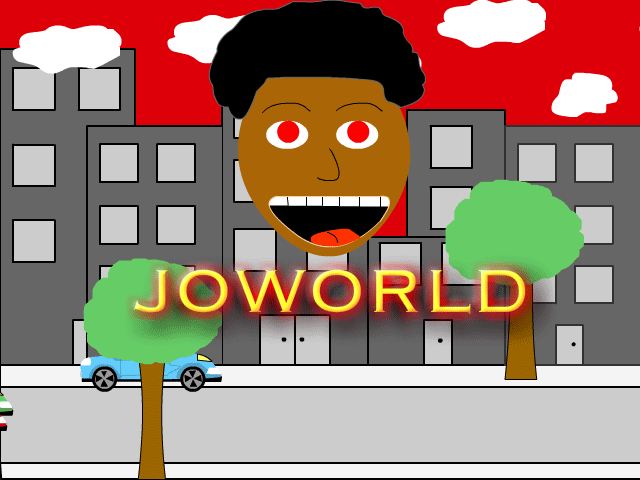
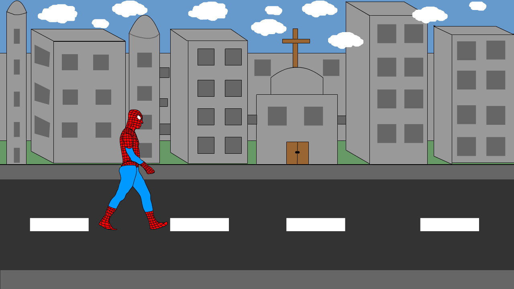

Jovaughn's Portfolio



JojoWorld
WalkerJo
This animated image here was one of my favorite pieces from the fall semester. Throughout the course, I made a large variety of animations with some of them being more of a class assignment rather then a self made creation. Once the professor opened the class to the "Spinning head lesson," I instantly knew where my mind was heading. My inspiration for the design of the image can be viewed by clicking the image itself.
If you are a marvel fan or someone who loves loves spiderman, this animated gif just speaks to you just by taking a glimpse at it. My favorite super hero is spiderman and when the assignment to create a person walking, I only could think of one person at that time. A major consideration came from the fact that Spiderman No Way Home was soon to be released at that time. Even with that, a major inspiration to do spiderman walking down a strip can be seen just by a web-click on the image.